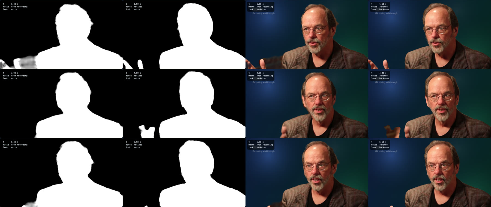
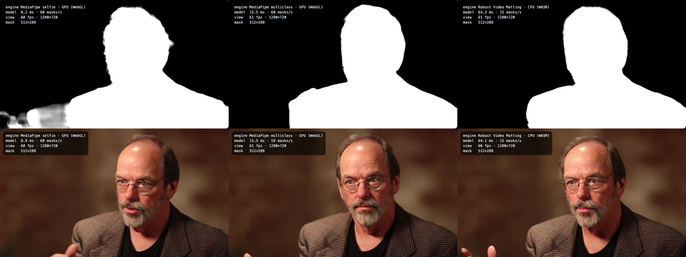

Separating the person from the background
A throwaway prototype for Clarity's recorder. Everything runs in this browser tab. Nothing is uploaded. Try each engine on your own camera, record a short take, then change the background after the fact.
1. While recording
The engine finds the person in each camera frame. The look decides what happens to everything else.
Allow camera access when asked. No microphone.
2. After recording
Record a take above. A baked take is final. A take that kept its matte can change its background here, and the matte can be redone with a slower, better pass.
This is the file the recorder stored. Camera on the left, matte on the right. One ordinary video, so Mux and every player can carry it.
3. The wider menu
What each place in the pipeline can do. The first rows are in this prototype. The rest need a server or a vendor.
4. What the test run showed
Measured on 30 October 2026 in headless Chromium on a Mac with Apple GPU, fed a 960×540 talking-head clip as a fake camera. Your own camera and browser will give different numbers. The HUD on the stage shows yours.
| Engine | Edges | Per frame | Mattes per second | Preview |
|---|---|---|---|---|
| MediaPipe selfie GPU via WebGL | Clean head and shoulders. Loses fast hands. | 9 to 12 ms | 60 | 60 fps |
| MediaPipe multiclass GPU via WebGL | Smoother outline, same trouble with hands. | 14 to 21 ms | 59 | 50 to 61 fps |
| Robust Video Matting CPU, one thread, in a worker | Best hair and hands. The matte trails motion by a few frames. | 64 ms | 15 | 60 fps |
| Robust Video Matting WebGPU | Wrong matte. 26 to 68% of pixels off against the CPU result, in onnxruntime-web 1.31.1 and the 1.32 nightly. Add ?ep=webgpu to try it in your browser. | 25 to 33 ms | about 30 | |
| Refine pass Robust Video Matting at 960×540, every frame, CPU | About 7.5× the take's length. A 2 minute take would wait about 15 minutes in the tab. | about 260 ms |
Same frame, live matte against refined matte. Columns are live matte, refined matte, live backdrop, refined backdrop. The live MediaPipe matte drops the gesturing hand or smears it with brick. The refine pass keeps it.

Each engine live. Top row is the matte, bottom row is the blur look. Left to right: MediaPipe selfie, MediaPipe multiclass, Robust Video Matting.

Two looks. A brand backdrop, and the person cut out in front of a slide.
CorridorKey on office footage. Left to right: the MediaPipe mask CorridorKey was given, CorridorKey's own output, the same with its green removal off, and CorridorKey's matte over the camera's own colours. Its colours go orange because it treats the wall as green screen. Its matte alone is good. Each frame took about 8 s on an M4 Mac through its MLX backend.
The stored file when the matte is kept. 6.1 s came to 1.87 MB at the 2.5 Mbps I asked for. The baked take came to 1.47 MB at 2.0 Mbps.
Test footage: frames from Ward Cunningham, Inventor of the Wiki, Wikimedia Commons, CC BY-SA 3.0. The screenshots above are shared under the same licence.